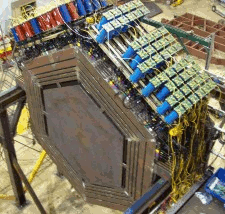
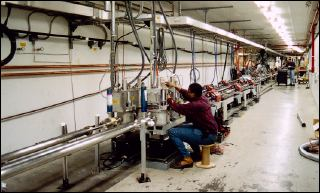

Our current research projects involve many collaborating institutions. We are participating in a few large-scale projects such as the Jefferson Lab CLAS-12 upgrade, and the MuLan project. The following are the main labs that we are involved with.
The MINERvA experiment is a collaborative effort to study the neutrino interaction and to study the nucleon dynamics that drive these interactions. The experiment is conducted at Fermilab in Batavia, Illinois. Currently, the MINERvA experiment is in the process of collecting and analyzing data. Our professors Dr. Gabriel Niculescu and Dr. Ioana Niculescu are involved in this effort. Click on the picture to pull up the MINERvA home page.
The Thomas Jefferson National Laboratory in Newport News, VA is currently upgrading their experimental capability from a 6 GeV maximum to a 12 GeV maximum. To do this, they are upgrading their current detectors in Halls A, B, and C, and they are installing a new Hall D with an entirely new detector. The upgraded detectors will allow for a higher upper limit in experimental capability, allowing for the possibility of experimentation that will reveal new data about particles that cannot be measured at lower energy levels. This will hopefully lead to entirely new discoveries and information about particle physics that is unforeseen, but the foremost intent is to discover new information about the structure and formation of the nucleus. Our role at JMU is to test and label the photomultiplier tubes, and construct their bases for Hall B, and to assemble new scintillator/PMT detector parts for Hall C. Click on the image below for the JLab home page. Or follow this link to read about the project on its wikipedia page:
The MuLan project is an effort to measure the lifetime of the Muon particle. The value of this project is that it will reveal to a greater degree the strength of the Fermi coupling constant. This will allow physicists to better understand the implications of electroweak theory-the theory that combines the weak nuclear force with the electromagnetic force. The MuLan project is in its analysis/conclusion stage. The hardware has been constructed, and the data has been taken. It is now being analyzed to draw conclusions about the Fermi constant. Click on the image for a pdf file on the MuLan project.